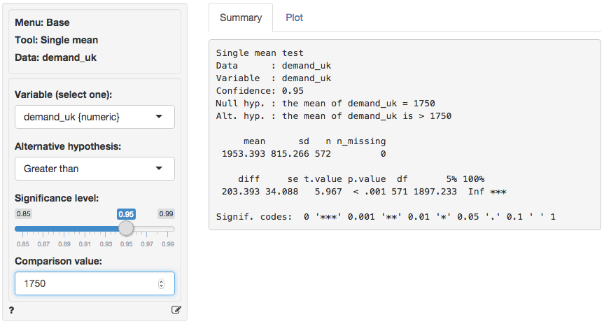
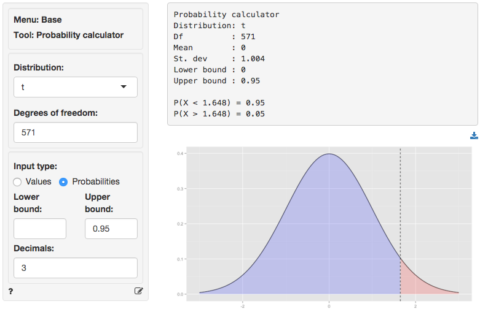
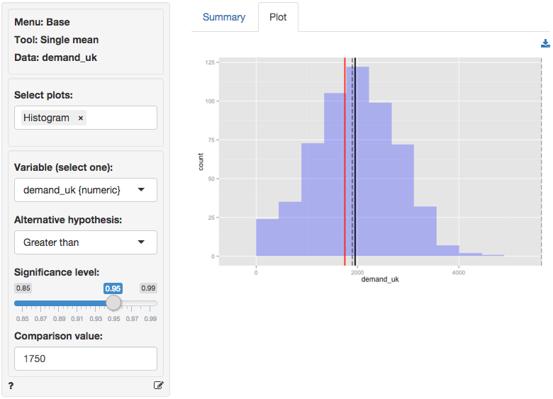

Base > Single mean
Compare a single mean to the mean value in the population
The single mean (or one-sample) t-test is used to compare the mean of a variable in a sample of data to a (hypothesized) mean in the population from which our sample data are drawn. This is important because we seldom have access to data for an entire population. The hypothesized value in the population is specified in the Comparison value box.
We can perform either a one-sided test (i.e., less than or greater than) or a two-sided test (see the Alternative hypothesis dropdown). We use one-sided tests to evaluate if the available data provide evidence that the sample mean is larger (or smaller) than the comparison value (i.e., the population value in the null-hypothesis).
Example
We have access to data from a random sample of grocery stores in the UK. Management will consider entering this market if consumer demand for the product category exceeds 100M units, or, approximately, 1750 units per store. The average demand per store in the sample is equal to 1953. While this number is larger than 1750 we need to determine if the difference could be attributed to sampling error.
You can find the information on unit sales in each of the sample stores in the demand_uk.rda data set. The data set contains two variables, store_id and demand_uk. Our null-hypothesis is that the average store demand in the UK is equal to 1750 unit so we enter that number into the Comparison value box. We choose the Greater than option from the Alternative hypothesis drop-down because we want to determine if the available data provides sufficient evidence to reject the null-hypothesis favor of the alternative that average store demand in the UK is larger than 1750.

The first two blocks of output show basic information about the test (e.g.,. the null and alternative hypothesis) and summary statistics (e.g., mean, standard deviation). The final row of output shows the following:
diffis the difference between the sample mean (1953.393) and the comparison value (1750)seis the standard error (i.e., the standard deviation of the sampling distribution ofdiff)t.valueis the t statistic associated withdiffthat we can compare to a t-distribution (i.e.,diff/se)p.valueis the probability of being wrong if we choose to reject the null hypothesis (i.e., the type I error)dfis the degrees of freedom associated with the statistical test (i.e., n - 1)5% 100%show the 95% confidence interval around the sample mean (1897 to Inf.). These numbers provide a range within which the true population mean is likely to fall
Testing
There are three approaches we can use to evaluate the null hypothesis. We will choose a significance level of 0.05.1 Of course, each approach will lead to the same conclusion.
p.value
Because the p.value is smaller than the conventional significance level (i.e., 0.05) we reject the null hypothesis and suggest that management should enter the UK market. Note also the ’***’ that are used as an indicator for significance.
confidence interval
Because the comparison value is not contained in the confidence interval we reject the null hypothesis and suggest that management should enter the UK market.
t.value
Because the calculated t.value (5.967) is larger than the critical t.value we reject the null hypothesis and suggest that management should enter the UK market. We can obtain the critical t.value by using the probability calculator in the Base menu. For a t-distribution with 571 degrees of freedom (see df) the critical t.value is 1.648. We have to enter 0.95 as the upper probability bound (i.e., 1 - 0.05) because the alternative hypothesis is Greater than.2

In addition to the numerical output provided in the Summary tab we can visualize the data in the Plot tab. The settings in the side-panel are the same as before. The black lines in the histogram show the sample mean (solid) and the confidence interval around the sample mean (dashed). The red line shows the comparison value (i.e., unit sales under the null-hypothesis). Because the red line does not fall within the confidence interval (1897 to Inf.) we reject the null-hypothesis in favor of the alternative.

Stats speak
This is a single mean test of the null hypothesis that the true population mean is equal to 1750. Using a significance level of 0.05, we reject the null hypothesis, and conclude that the true population mean is larger than 1750.
The p.value for this test is < .001. This is the probability of observing a sample mean that is as or more extreme than the sample mean from the data if the null hypothesis is true. In this case, it is the probability of observing a sample mean that is larger than (or equal to) 1953.393 if the true population mean is 1750.
The 5% confidence bound is 1897.233. If repeated samples were taken and the 5% confidence bound computed for each one, the true population mean would exceed the lower bound in 95% of the samples
1 The significance level, often denoted by \(\alpha\), is the highest probability you are willing to accept of rejecting the null hypothesis when it is actually true. A commonly used significance level is 0.05 (or 5%)
2 \(1 - \alpha\) is called the confidence level. A commonly used confidence level is 0.95 (or 95%)